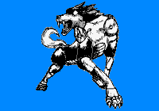

哮风之狼/Howlin' Wolf
A+4800
能力等级：
破坏力A 速度B 射程B 持续力D 精密动作性B 成长性C
能力定位：中距离力量型
能力评定：狼型替身。能通过远吠放出冲击波。
既然是狼型，自然也能进行啃咬和抓挠的攻击。
力量和瞬间爆发力很强，瞬间破坏力相当可观的替身。
整体来说是平衡性较好的种类。
替身拥有自我意识，至少能自主进食。同时它的性格非常敏感纤细，被说是犬型时还会垂头丧气，对气味并不是很敏感。
虽然被叫做狼型替身，却并不是狼。
替身拥有自我行动的能力，在脱离替身使者独立行动时，可以根据最后的命令和自我判断来进行下一步行动。替身使者与替身之间不存在感官共享和心灵沟通等能力（除非有其他资源支持）。
放出替身是一个迅捷动作，收回替身也是一个迅捷动作。替身拥有自己的动作，命令替身行动不会消耗替身使者的动作。对替身造成的伤害和负面效果也不会传递到替身使者身上。
替身的数据如下：
体积：5
智力：5 感知：16 决心：16
力量：21 敏捷：16 耐力：21
风度：2 操纵：2 沉着：5
武技14-牙14
生存14-强韧11
专注11-意志11
运动11-反射11
洞察11-调查11
隐秘11-潜行11
生命值：35
速度：100
先攻：25
敏感范围：400米
触及范围：60米
天生武器伤害：10L（8加骰，神兵）
意志豁免：40DP+6
反射豁免：40DP+6
强韧豁免：48DP+8
侦查检定：38DP+6
潜行检定：38DP+6
基础防御：16+3附加
替身被视为灵体，替身使者拥有灵感视觉和正常影响灵体和虚体的能力。
替身初始附带【瞪视】【冲撞】【旋风】【抓挠】四个技能
【瞪视】：
通过瞪过别人以施加压力。
标准动作对触及范围内的一个目标进行一次意志检定，目标以意志豁免，失败则这一轮内不能进行移动，这是C级影响心灵的限制行动效果。
【冲撞】：
替身使用身体冲撞别人。
标准动作对触及范围内的一个目标进行一次肉搏攻击检定，并将目标击退等于伤害数*1米。
【旋风】：
替身操纵风的力量攻击敌人。
标准动作对触及范围内的一个目标进行一次肉搏攻击检定，造成力场严重伤害。
【噬咬】：
替身抓挠敌人。
标准动作对触及范围内的一个目标进行一次力量+武技：牙攻击检定，造成物理穿刺伤害。
【骑乘】：
替身使者可以乘坐替身移动。
上狼还是下狼都需要一个移动动作。
能力开发：
【龙卷】：C+1000
替身制造出小型龙卷风攻击单数敌人。
标准动作对触及范围内的一个目标进行一次力量+武技+肉搏相关专业攻击检定，造成力场严重伤害。被命中的目标会被向上击飞25米距离，这轮结束后开始坠落。
另一种运用方式：【龙卷群】
制造出大型龙卷风攻击复数敌人。
将攻击目标扩大为触及范围内的所有敌人。
【风神】：B+2000
替身利用风的力量打击敌人。
标准动作对触及范围内的一个目标进行一次力量+武技+肉搏相关专业攻击检定，造成力场严重伤害。
被命中的目标会陷入B级环境来源的定身状态和B级创伤来源的力竭状态，持续一轮。
同时向上被向上击飞50米，这轮结束后开始坠落。
【犬砂岚】：A+4000
替身利用风的力量打击敌人。
标准动作对触及范围内的所有目标进行一次力量+武技：肉搏相关专业攻击检定，造成力场严重伤害。
被命中的目标会被向上击飞180米，这轮结束后开始坠落。
同时受到伤害的目标会承受等于胜出数的流血异常点数，正常豁免。
被命中的目标会陷入A级环境来源的定身状态一轮。
这次攻击无视目标的闪避防御，这是A级环境来源的效果。